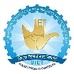

About Me
Highly motivated and results-oriented Backend Software Engineer with 4 years of experience in designing, developing, and deploying robust and scalable backend systems for Mobility, Marketplace, Delivery, Fintech, and Conversational AI domains. Proven ability to deliver high-quality, high-performance solutions while collaborating effectively within agile teams. Expertise in , Javascript, and SQL, with a strong foundation in data structures, algorithms, and object-oriented design principles. Eager to contribute to innovative projects at forward-thinking organization and leverage my skills to build cutting-edge solutions for customers.
Tech Stack
- Javascript
- Node.js
- Express.js
- Git
- SQL
- pm2
- Flutter
- Dart
IT Constructs
- Data structures
- Algorithms
- Object-oriented design
- Database management system
- MySQL
- Time complexity analysis: Big-O analysis
Familiar with
- AWS
- Docker
- EKS
- Redis
- Typescript
- Python
- C
- C++
- HTML
- CSS
Experience
- Enhanced Analytics accuracy by resolving discrepancies in unique user reporting through IP address tracking, resulting in accurate data representation on the Apache Superset dashboard.
- Designed and implemented online banking workflows, expanding product offerings and increasing user engagement.
- Contributed to the optimization of AI models, leading to improved accuracy and enhanced user experience.
- Mentored and guided junior team members, fostering a collaborative and high-performing team culture.
- Technologies Used: Javascript, Node.js, Express.js, PostgreSql, Git, EKS, Docker
Software Engineer in Product Development
Jugnoo · Chandigarh, IndiaMarch 2022 - September 2023 · 1 yr 6 mos
- Embraced the opportunity to take on a leadership role, leading a team of 8 skilled backend engineers.
- Developed solutions for Taxi, E-bike, and Analytics verticals of Jugnoo and continuously enhanced the product.
- Designed and spearheaded the end-to-end architecture for seamlessly integrating diverse Taxi offerings within Jugnoo's platform, while also establishing robust access control mechanisms for B2B clients. This enabled effortless onboarding of new clients and ensured optimal performance, scalability, and security of the integrated system.
- Rental E-Bike: Implemented middleware server application to communicate with Tracker devices. Developed code scalable to handle 4000+ Devices. Worked with Smartbike, FloTempo, Bolt and many more as major clients.
- Enhanced the development and optimization of the data-driven analytics product "Kato" by leveraging MySQL and BigQuery. Took ownership of generating comprehensive reports on B2B client data, delivering valuable insights into their performance and facilitating data-driven decision-making.
- Optimized worst-performing queries and APIs, achieving an impressive reduction in response time of up to 87%. Implemented advanced indexing and query tuning techniques to significantly enhance the product's overall performance and user experience
- Designed and implemented optimized architecture for features using RESTful APIs to be merged into the microservice-driven product along with integration with various third-party services.
- Worked closely with frontend developers and cross-functional teams to ensure seamless integration of a highly-available and fault-tolerant system between the front-end and backend.
- Technologies Used: Javascript, Node.js, Express.js, MySql, Git.
- Collaborated with a team of experienced SDEs to write clean, efficient, and high-quality APIs while also optimizing and adding new features to existing APIs.
- Assisted in testing and debugging code, ensuring that all software met quality standards and was free of errors.
- Contributed to the creation of technical documentation, including user manuals and project reports.
- Technologies Used: Javascript, Node.js, Express.js, MySql, Git.
Education

2017 - 2021 | CGPA: 7.37
UIET, Panjab University Chandigarh
Bachelor of Engineering - Computer Science and Engineering2017 - 2021 | CGPA: 7.37